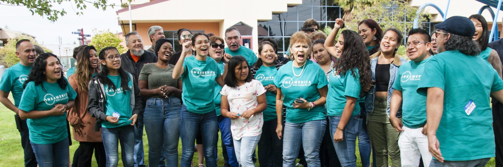
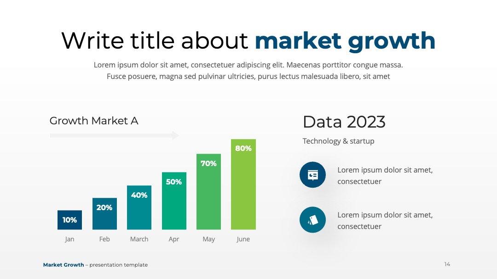
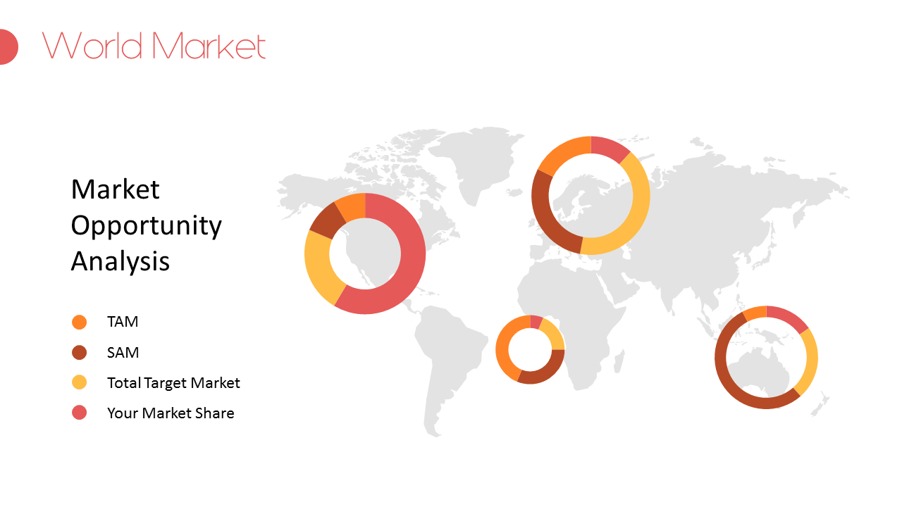

HaoYu Wang
I am a dedicated student passionate about economics, finance, and data analysis. I am preparing for undergraduate study in Economics, with a strong curiosity about how markets work, how policies shape economic outcomes, and how data can help us understand real-world financial behavior. I enjoy exploring topics including supply and demand, price elasticity, macroeconomic trends, and global trade systems.
Outside of classroom learning, I spend time reading economic articles, tracking market news, and practicing basic data interpretation. I am also interested in environmental economics, learning about the connections between climate change, carbon policies, and sustainable economic development. These topics inspire me to think about how economic tools can solve pressing social and environmental challenges. I believe economics is not just abstract formulas; it is a powerful framework to explain human decisions and build better systems for communities.
I am a careful, patient learner who values critical thinking and clear communication. I look forward to continuing my academic journey at university, building a solid foundation in economic theory, statistics, and quantitative research. My long-term goal is to combine economic analysis with practical problem-solving, whether in finance, policy research, or sustainable development.
Experience
Club Member
• Participated in weekly discussions about market trends and fiscal policies
• Collaborated with teammates to prepare presentations on supply and demand
• Practiced analyzing real-world economic news and case studies
Volunteer
• Assisted in organizing fundraising events and tracked donation budgets
• Communicated with participants and recorded basic financial data
Web Developer & Portfolio Creator
• Built this personal resume website using HTML and Bootstrap
• Designed page layout, customized icons and personal bio content
• Learned version control and file management on GitHub
Education
High School
University of California Riverside
Portfolio






